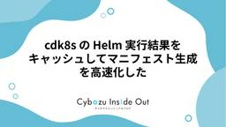

Cybozu Inside Out | サイボウズエンジニアのブログ
https://blog.cybozu.io/
サイボウズ株式会社、サイボウズ・ラボ株式会社のエンジニアが提供する技術ブログです。製品やサービスの開発、運用で得た技術情報やエンジニアの活動、採用情報などをお届けします。
フィード

cdk8s の Helm 実行結果をキャッシュしてマニフェスト生成を高速化した
Cybozu Inside Out | サイボウズエンジニアのブログ
この記事は kintone 生成 AI チームで連載中の kintone AI リレーブログ 2026 の 10 本目の記事です。 リレーブログでは生成 AI チームのメンバーが AI トピックに限らず、さまざまなことについて発信していきます。 こんにちは！ kintone の生成 AI チームでソフトウェアエンジニアをやっている福田です。 私たちのチームでは cdk8s を使って Kubernetes マニフェストを管理しています。（cdk8s の詳細は別の記事で紹介していますので、あわせてご覧ください。） cdk8s を使うと TypeScript でマニフェストが書けるだけでなく、Hel…
4日前

サイボウズは JaSST'26 Tokyo で協賛＆登壇します！
Cybozu Inside Out | サイボウズエンジニアのブログ
こんにちは、OfficeMobileチームでQAエンジニアをしている小竹です。 サイボウズは 2026年3月20日（金）に開催されるソフトウェアテストのシンポジウムJaSST'26 Tokyoにスポンサーとして協賛します。 今回はスポンサーセッションに弊社のメンバーが登壇し、生成AIを組み込んだ製品のテストについてお話しする予定です。本記事ではこちらのセッション、およびJaSST'26 Tokyoの後に開催を予定しているアフターイベントについてご案内させてください。 LLMでもいつものテスト技術 〜意外と半分はこれまでのテストでした〜 日時 3月20日（金） 14:25（J3-2） タイムテー…
9日前
cdk8s のデプロイ戦略 - GitOps とマニフェスト管理の工夫
Cybozu Inside Out | サイボウズエンジニアのブログ
この記事は kintone の生成 AI チームで連載中の kintone AIリレーブログ 2026 の 9 本目の記事です。 リレーブログでは、生成 AI チームのメンバーが AI トピックに限らずさまざまなことについて発信していきます。 こんにちは！ kintone 生成 AI チームの 386jp です。 前回の記事「cdk8s をもっと使いこなす - kintone AI チームの活用 Tips」では、 cdk8s を使う上で工夫している実践パターンを紹介しました。 今回は、 cdk8s で生成したマニフェストをどのようにデプロイしているか、デプロイ戦略について紹介します。 目次: …
9日前
理想のプラットフォームを目指す、kintoneプラットフォームエンジニアリング部の仲間たち
Cybozu Inside Out | サイボウズエンジニアのブログ
kintoneの開発部門には、「プラットフォームエンジニアリング部（以下、PfE部）」があります。 キャリア入社してPfE部に配属された aki (@aki366) が、PfE部が何をする部なのか、なぜ今このタイミングで立ち上がったのかを、立ち上げメンバーへのインタビューを通してひも解く3部作。今回はその最終回です。 第1回：なぜ、kintoneにプラットフォームエンジニアリング部は生まれたのか 第2回：探索型開発と向き合う、kintoneプラットフォームエンジニアリングの挑戦 人と文化の両面から、PfE部の今とこれからを探る プラットフォームは機能や基盤の進化だけでなく、そこに関わる人たちの…
13日前
Amazon EKS Auto Mode + NetworkPolicy のハマりどころ
Cybozu Inside Out | サイボウズエンジニアのブログ
この記事はkintone生成AIチームで連載中のkintone AI リレーブログ 2026 の8本目の記事です。 リレーブログでは生成AIチームのメンバーがAIトピックに限らず、さまざまなことについて発信していきます。 こんにちは！ kintone の生成 AI チームでソフトウェアエンジニアをやっている福田です。 以前の記事で生成 AI チームで Kubernetes の基盤を構築してアプリケーションを運用していることをご紹介しました。 アプリケーションを運用する上で、セキュリティは欠かせない要件の 1 つです。 セキュリティと一口に言ってもさまざまな側面での対策が考えられますが、アプリケ…
17日前
kintone フロントエンド開発における AI 活用の取り組み
Cybozu Inside Out | サイボウズエンジニアのブログ
こんにちは！サイボウズでプロダクトエンジニアをしている @daikimkw です。 この記事では、kintone のフロントエンド開発で AI をどのように活用しているか、そして kintone 開発全体として生産性を向上させるために今後どのような取り組みをしていくかについて紹介します。 kintone 開発での AI 活用については、以下の記事でも紹介しています。 サイボウズで利用可能な AI コーディングツールの紹介 kintone AI 開発の効率化！Claude Code に Renovate PR レビューをお任せした話 チーム専用の Claude Code Plugin マーケット…
17日前
探索型開発と向き合う、kintoneプラットフォームエンジニアリングの挑戦
Cybozu Inside Out | サイボウズエンジニアのブログ
状況が変化する中での意思決定 前回記事 なぜ、kintoneにプラットフォームエンジニアリング部は生まれたのか で触れた、プロダクト開発とプラットフォーム開発の 「時間軸の違い」。 探索型プロダクト開発（短期） 仮説検証 / 変更前提 / 速度重視 プラットフォーム（長期） 安定運用 / 先回り設計 / 継続投資 どちらも正しい。 しかし前提が違うまま進むと、意思決定の場面で難しさが表面化します。 いま私たちが直面しているのは、「どちらが正しいか」ではなく、複数の選択肢の中から何を選ぶかという問題です。 選択肢が増えた世界で、どうやって選び続けるのか。 本記事では、その構造を掘り下げます。 こ…
20日前
AIエージェントと協業するチームの始め方
Cybozu Inside Out | サイボウズエンジニアのブログ
この記事はkintoneの生成AIチームで連載中のkintone AIリレーブログ2026の7本目の記事です。 リレーブログでは、生成AIチームのメンバーがAIトピックに限らずさまざまなことについて発信していきます。 こんにちは、kintoneの生成AIチームでエンジニアリングマネージャーをしている立山です。 みなさんのチームはAIを活用していますか？ここ最近はコーディングエージェントが高速にそこそこいいコードを作ってくれる時代で、個人の開発生産性は上がっていると思います。一方で、チームでAIを活用するというのはまだまだ限られているのではないでしょうか？ この記事ではチームでAI、特に自律的に…
20日前
【資料公開】「LLMアプリの品質保証って何すればいいの？」の全体像を整理して勉強会をやりました
Cybozu Inside Out | サイボウズエンジニアのブログ
speakerdeck.com こんにちは！サイボウズOfficeという製品でQAをしている水谷(@dog_dog_3dog)です。 社内で「LLMアプリの品質保証 ～LLMの特性から全体像まで～」というテーマで勉強会を主催しました。 この記事では、勉強会の内容と開催の背景を簡単に紹介します。 資料の内容 資料では、ざっくり以下のような流れで話をしています。 COMPASからのケーススタディ まずAIの品質問題の実例を見て、なぜAI独自の品質保証が必要となる背景をさらっています。 LLMアプリ独自の品質特性 生成AI品質マネジメントガイドラインをもとに、機能要求満足性・信頼性・安全性・公平性な…
23日前
cdk8s をもっと使いこなす - kintone AI チームの活用 Tips
Cybozu Inside Out | サイボウズエンジニアのブログ
この記事は kintone の生成 AI チームで連載中の kintone AIリレーブログ 2026 の 6 本目の記事です。 リレーブログでは、生成 AI チームのメンバーが AI トピックに限らずさまざまなことについて発信していきます。 こんにちは！ kintone 生成 AI チームの 386jp です。 前回の記事「cdk8s を使ってみた！ - TypeScript で Kubernetes を管理する実践 Tips」では、 cdk8s を導入した背景と実感したメリットを紹介しました。 今回は、より実践的な内容として、私たちのチームが cdk8s を使う上で工夫しているパターンを詳…
23日前
4社合同イベント！Mobile Tech Flexを開催しました！
Cybozu Inside Out | サイボウズエンジニアのブログ
こんにちは！サイボウズのトニオ（@tonionagauzzi）です。普段はkintone開発チームにてAndroidアプリを主に開発しています。 今回は、ディップ株式会社、株式会社Voicy、株式会社ヤプリ、そしてサイボウズ株式会社の4社合同でモバイル勉強会を開催しました。 本記事では、イベントの概要と当日の様子をお届けします！ イベントの概要 イベント情報 当日の様子 LT (1) : AIとなら実現できる事業と品質のシン化の両立 LT (2) : OSアップデート：年に一度の「大仕事」を乗り切るQA戦略 LT (3) : "レビュー"だけだったAI活用から半年。ヤプリのiOS開発・運用はど…
24日前
ヘルプサイト刷新の全貌（フロントエンド除く）: AWS × Terragrunt によるインフラ再構築、textlint プラグインの開発、etc
Cybozu Inside Out | サイボウズエンジニアのブログ
こんにちは、ソフトウェアエンジニアの @ajfAfg です。 弊社には複数のヘルプサイトが存在しますが、その一部を半年ほどで刷新しました。刷新と呼んでいますが、WOVN という多言語化用 SaaS の導入に加え、ヘルプサイトのコンテンツを作成するテクニカルライターの生産性向上を狙った取り組みも含まれていました。本稿では、刷新プロジェクトの中で私が担当した取り組みを紹介します。 なお、本稿では特に断りがない場合、旧ヘルプサイトは刷新前のヘルプサイトを指し、新ヘルプサイトは刷新後のヘルプサイトを指すものとします。文脈から明らかな場合は単にヘルプサイトと書く場合もあります。 目次 目次 背景 刷新プ…
1ヶ月前
チーム専用の Claude Code Plugin マーケットプレイスを作った話
Cybozu Inside Out | サイボウズエンジニアのブログ
この記事はkintoneの生成AIチームで連載中の kintone AI リレーブログ 2026 の 5 本目の記事です。リレーブログでは、生成 AI チームのメンバーが AI トピックに限らずさまざまなことについて発信していきます。 こんにちは！ kintone の生成 AI チームでバックエンド開発・運用を担当している齋藤です。 日頃 AI 機能やその基盤の開発・運用などの業務に取り組んでいる私たちですが、 今回は私たちが AI をどのように活用しているのかという話の一つとして、 チーム専用の Claude Code の Plugin マーケットプレイス を作った話を紹介します。 Clau…
1ヶ月前
なぜ、kintoneにプラットフォームエンジニアリング部は生まれたのか
Cybozu Inside Out | サイボウズエンジニアのブログ
「この部って具体的に何をするんだろう？」 プラットフォームエンジニアリング部に配属されて、最初に浮かんだのはそんな戸惑いにも似た疑問でした。 こんにちは。プラットフォームエンジニアリング部所属の aki (@aki366) です。 kintoneの開発部門には、「プラットフォームエンジニアリング部（以下、PfE部）」があります。 私はPfE部が自分の入社直前に新たに設立されたことを、入社後に知りました。 「プラットフォームエンジニアリング」という言葉自体は、知っていましたし入社後の勉強会などを通じて触れてもきましたが、実際の現場でどんな課題意識があり、どういう狙いで部を設立したか――そこまでは…
1ヶ月前
cdk8s を使ってみた！ - TypeScript で Kubernetes マニフェストを管理する
Cybozu Inside Out | サイボウズエンジニアのブログ
この記事は kintone の生成 AI チームで連載中の kintone AIリレーブログ 2026 の 4 本目の記事です。 リレーブログでは、生成 AI チームのメンバーが AI トピックに限らずさまざまなことについて発信していきます。 こんにちは！ kintone 生成 AI チームの 386jp です。 突然ですが、みなさんは Kubernetes のマニフェストをどのように生成・管理していますでしょうか? ArgoCD で GitOps を実践されている方であれば、Kustomize や Helm、Jsonnet などのツールで管理されているかと思います。サイボウズでも、これらのツ…
1ヶ月前
kintone AI 開発の効率化！Claude Code に Renovate PR レビューをお任せした話
Cybozu Inside Out | サイボウズエンジニアのブログ
この記事は kintone の生成 AI チームで連載中の kintone AI リレーブログ 2026 の 3 本目の記事です。 リレーブログでは、生成 AI チームのメンバーが AI トピックに限らずさまざまなことについて発信していきます。 こんにちは！ kintone の生成 AI チームと生産性向上チームとを「兼務」して活動している高見 ( @takamin55 ) です。 Cybozu には「大人の体験入部」や「兼務」といった制度があり、所属チームの枠を超えた活動を通じてキャリアの可能性を広げることができます。 cybozu.backstage.cybozu.co.jp cybozu…
1ヶ月前
kintone AI でも Kubernetes はじめました
Cybozu Inside Out | サイボウズエンジニアのブログ
この記事はkintoneの生成AIチームで連載中のkintone AIリレーブログ2026の2本目の記事です。 リレーブログでは、生成AIチームのメンバーがAIトピックに限らずさまざまなことについて発信していきます。 こんにちは！ kintoneの生成AIチームでバックエンドの開発・運用を担当している 齋藤 ( K.Saito (@SightSeekerTw) / X ) です。 以前、kintone AI ラボ のバックエンドを OpenTelemetry と AWS CloudWatch Application Signals で可観測性を向上させた話 という記事で kintone の A…
1ヶ月前
kintoneのAI機能開発をスケールさせるためのチーム戦略
Cybozu Inside Out | サイボウズエンジニアのブログ
この記事はkintoneの生成AIチームで連載中のkintone AIリレーブログ2026の1本目の記事です。 リレーブログでは、生成AIチームのメンバーがAIトピックに限らずさまざまなことについて発信していきます。 こんにちは、kintoneの生成AIチームでエンジニアリングマネージャー (EM) をしている立山です。 この記事では、kintoneにおけるAI機能を担当するチームが、どのような戦略でAI機能開発に向き合ってきたかについて紹介します。 kintoneにおけるAI機能のこれまで 2024年夏：AI機能の開発を開始 2024年10月：RAGを活用したAI機能を発表 2025年4月：…
1ヶ月前
【協賛レポート】Waffle Collegeで女子・ノンバイナリー学生のITキャリアを応援！
Cybozu Inside Out | サイボウズエンジニアのブログ
こんにちは！サイボウズの People Experience チームの hokatomo(hokatomo.bsky.social) です。 私たちのチームでは、2025年度も Waffle College に協賛し、女子・ノンバイナリー学生がITキャリアへ踏み出すための学びの場を支援しています。 Waffle College とは、未経験からプログラミング・AI活用を学び、エンジニアインターンに挑戦するためのコミュニティです。半年〜1年をかけて実践的に学べるプログラムです。 今回、このコミュニティにサイボウズは協賛し、コミュニティ内で学生の方に向けてキャリアに関するスピーチを行いました！その…
2ヶ月前
kintoneライターチームが実践するAI活用：Difyアプリによるヘルプアンケート分析
Cybozu Inside Out | サイボウズエンジニアのブログ
こんにちは、kintoneライターチームの安田です。今回は、私たちのチームがAIを活用して業務改善に取り組んだ事例をご紹介します。 私たちkintoneライターチームでは、kintoneヘルプの記事の執筆や、製品文言の検討を担当しています。その業務の一環として、kintoneヘルプから匿名でお寄せいただいたお客様アンケートを分析し、「分かりにくかった」とご指摘のあったヘルプ記事を改善する活動を行っています。 ヘルプアンケート分析の課題 アンケートの回答に記載いただいたお客様のコメントを分析するにあたり、これまでは以下の課題がありました。 匿名アンケートのため、お客様がどのような状況でkinto…
2ヶ月前
【QAキャリア採用】共感してくれた貴方と一緒に働きたい！ 〜サイボウズのQA、会社の特徴について語ります〜
Cybozu Inside Out | サイボウズエンジニアのブログ
サイボウズではQAエンジニアのキャリア採用を行なっています。サイボウズのQAや会社の特徴について語っています。
2ヶ月前
BuriKaigi 2026に登壇 & 協賛してきました！
Cybozu Inside Out | サイボウズエンジニアのブログ
BuriKaigi 2026 に登壇 & 協賛してきました！ 1/9(金), 1/10 (土) に富山の富山国際会議場で開催された BuriKaigi 2026 にてサイボウズのメンバー計 5 名がセッションでの登壇しました。またサイボウズはガンドスポンサーとして BuriKaigi2026 に協賛しており、ブース出展＋スポンサートークも行いました。 burikaigi.dev 今回は参加メンバーにそれぞれ感想を寄せてもらいつつ、Sajiがその時の様子をお伝えしたいと思います。 BuriKaigi 2026 とは BuriKaigi は毎年富山で開催されている分野を問わないソフトウェア開発・I…
2ヶ月前
AIと一緒にリリースノート作成！テクニカルライターの試行錯誤な日々
Cybozu Inside Out | サイボウズエンジニアのブログ
こんにちは。テクニカルライターチームの近藤（@konyukiwork.bsky.social）です。 2025年は、生成AIがものすごいスピードで発展し、「どうやったらうまく活用できるのか？」と試行錯誤を重ねた1年でした。 今回は、サイボウズのテクニカルライターが、生成AIを活用してリリースノート作成を効率化した事例をご紹介します。 どんな課題があった？ 製品アップデートの頻度が増え、リリースノートの更新作業の負担が大きくなっていた 製品ごとに文体（「ですます調」「体言止め」など）が異なり、手作業での修正に手間がかかっていた ねらい 担当者の負担を減らし、ライターのチェック作業をスムーズにする…
2ヶ月前
11月まで続いた夏フェス「CYBOZU SUMMER BLOG FES '25」の顛末と運営の振り返り
Cybozu Inside Out | サイボウズエンジニアのブログ
こんにちは、フロントエンドエンジニアのおぐえもん（@oguemon_com）です。 世間では12月頭から続いたアドベントカレンダーシーズンが終わり仕事納めムード一色ですが、みなさんいかがお過ごしでしょうか。 サイボウズでは、アドベントカレンダーとして大量の記事が投下されるこの時期を避けるように、7月中旬から「CYBOZU SUMMER BLOG FES '25」（通称ブログフェス）というブログの夏フェスを開催していました。そしてブログフェスは、7月14日（月）から約3ヶ月半にわたる会期を終え、11月5日（水）に無事幕を下ろしました。 結果として、111名の当社社員の手で、120本の記事を投稿す…
3ヶ月前
Jsonnet mixins で実現する環境別ブランチ運用からの脱却
Cybozu Inside Out | サイボウズエンジニアのブログ
こんにちは！ソフトウェアエンジニアとして活動している @nissy_dev です。 サイボウズでは、各プロダクトを新しい Kubernetes 基盤に移行する取り組みを進めています。この記事では、Kubernetes リソースの管理において、従来の環境別ブランチ運用から Jsonnet mixins を活用した単一ブランチ運用への移行について紹介します。 目次 ArgoCD での環境別ブランチ運用 発生していた課題 Jsonnet mixins を使った環境別ブランチの廃止 Jsonnet mixins 設計方法 トレードオフ パラメータと mixins の使い分けが難しい mixins では…
3ヶ月前
「どう使う？サイボウズと語ろう 生成AIとの付き合い方 Cybozu Tech Meetup#24」を開催しました！
Cybozu Inside Out | サイボウズエンジニアのブログ
こんにちは！開発本部 組織支援部People Experienceチームの貴島（@jnkykn）です。2025/11/19 東京オフィスで、どう使う？サイボウズと語ろう 生成AIとの付き合い方 Cybozu Tech Meetup#24を開催しました。この記事では、当日の様子をご報告します。 どう使う？サイボウズと語ろう 生成AIとの付き合い方 Cybozu Tech Meetup#24 Cybozu Tech Meetupは、サイボウズが主催する技術系のMeetupです。回ごとに異なるテーマで、開催しています。24回目の今回は、サイボウズのエンジニアたちが開発の現場で生成AIをどう取り入れて…
3ヶ月前
The PHP FoundationへSilver sponsor以上で寄付されている会社様へ Advisory Board Slackへ参加しませんか
Cybozu Inside Out | サイボウズエンジニアのブログ
The PHP FoundationへSilver sponsor以上で寄付されている会社様へ Advisory Board Slackへ参加しませんか Advisory Board Slackへ参加しませんか こんにちは。Garoon 開発チームのてきめんです。 今回は、The PHP Foundationのお話をさせていただこうと思います。 The PHP FoundationとはPHPの持続的な繁栄を支えていこうという団体で、サイボウズは設立初期の2021年から寄付を続けています。 thephp.foundation Silver sponser以上継続して寄付されている企業には、特典と…
3ヶ月前
CODE BLUE 2025参加レポート
Cybozu Inside Out | サイボウズエンジニアのブログ
はじめに 講演 [三井物産セキュアディレクション株式会社] Agentic Web Security [GMO Flatt Security 株式会社] AI エージェント SaaS を安全に提供するための自社サンドボックス基盤 ディープフェイク・サプライチェーン：サイバー犯罪の武器となる合成メディア Agentic AIによる実践的ペネトレーションテスト自動化 コンテスト・ワークショップ Maritime Hacking Village CyberTAMAGO おわりに はじめに こんにちは、Cy-PSIRTです。2025年11/18, 19の日程で開催された国際的な情報セキュリティカンファ…
3ヶ月前
Kubernetes 上でインメモリ KVS を冗長化する
Cybozu Inside Out | サイボウズエンジニアのブログ
クラウド基盤本部の新井です。 サイボウズでは、セッション情報など一時的なデータを置くために yrmcds というインメモリキーバリューストア（KVS）を開発し、クラウド基盤にホストして利用してきました。 blog.cybozu.io 私たちのチームでは、旧基盤にホストされてきた yrmcds を、Kubernetes をベースとした基盤である Neco に移行しようとしています。 そこで、プラットフォーム（自社基盤）コースのインターン参加者に、Kubernetes 上で KVS の冗長化を実現するアルゴリズムの設計と PoC の実装を行なっていただきました。 本記事は、その成果をメンターがまと…
3ヶ月前
kintoneローカルMCPサーバーのテストを行いました
Cybozu Inside Out | サイボウズエンジニアのブログ
こんにちは。kintone拡張基盤チームQAの massan です。今回は、今年2025年8月にリリースされたkintoneローカルMCPサーバー（以下 kinone MCPサーバー）のQAプロセスについてご紹介します。 kintone MCPサーバーの紹介 拡張基盤チームでは現在、Claude DesktopやCursorといった生成AIからkintoneを操作できるMCPサーバーを公開しています。8月の初回リリースから機能追加を経て、現バージョンではアプリ検索から基本的なレコード操作、アプリ作成までをサポートしています。 cybozu.dev 開発が決まった頃からQAが参加しており、MCP…
3ヶ月前